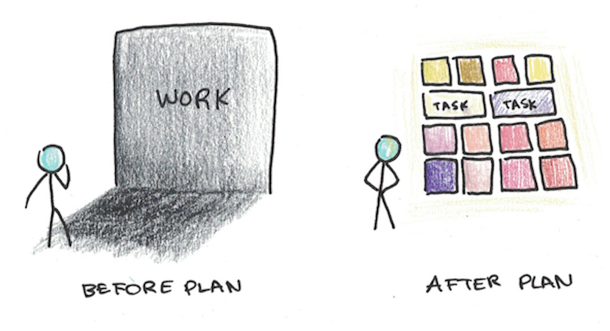

平日蒐集一些讓我很有感觸的句子，把它們彙整起來分享給大家～
前導
短期怕做了什麼而後悔，
長期怕沒做什麼而後悔。
真的！
如果那個決定無傷大雅，那為何不去嘗試看看？等之後再來後悔，真的會很漚！
瞎忙是一種懶惰，
是思維上的懶惰，
是行動上的盲目。
瞎忙大多是一種掩飾，
掩飾自己在逃避少數討厭的當務之急。
有時候可以停下腳步，思考一下現在的自己到底是不是在「戰術上的拖延」。
滿腦子錯誤的想法，
然後根據錯誤的想法做出糟糕的決定，
而不是經過深思之後提出不同的意見，
乃是人生最大的悲劇之一。
所以定期更新個「個人系統」吧！可以透過閱讀、反思、與人互動等方法來做到。
注意你的思想，它們會變為言語。
注意你的言語，它們會變為行動。
注意你的行動，它們會變為習慣。
注意你的習慣，它們會變為性格。
注意你的性格，它會變為你的命運。
這跟「習慣 → 思考模式、行為舉止 → 類似蝴蝶效應進而引發後續的種種」的道理很像。
飲食與健康課，牛玉珍老師：
「覺察才會帶來改變。」
「痠痛才貼布，治標不治本！」
覺察以後，才會真正開始思考該如何去處理，繼而讓自己能夠有所改變。
做自己
多數人傾向的選擇，
不代表就是最好或是最正確的選擇。
可能比較「安全」是沒錯啦，但某些選擇或許⋯⋯有意想不到的驚喜也說不定🤔
你之所以焦慮，
是因為你急於過「標配」的人生
從小我們被教育應該要怎樣怎樣，但人生沒有標準答案啊！
我們總以為青春是永駐的，
多麼理所當然的想法。
可今天我們畢業了，
如同這四年短暫的高中時光，
生命的價值，
也恰恰在於它並非永垂不朽，
生命因其有限而可貴。
現在的我深有體會，
我之所以在這兒今天說這些，
是想提醒大家 time is luck。
你不要浪費生命為別人而活，
要活出你自己的意義，
為你珍惜的事物奮鬥，
心無旁騖，
即便不能如願，
至少我們也曾經精彩的活過。
出自【蜘蛛人驚奇再起2：電光之戰】關的畢業演講
時間有限，為自己的人生鮮艷上色！
生活本來就是自由選擇。
別完全被「應該怎樣」束縛住啦！
有目標
一個人能夠踐行一個好的生活或是學習習慣，
一定是內心深處有一個十分堅定的目標的人。
很多成功的人，
也許只是比我們目標更清晰，
計劃更科學，
毅力更堅強，
而這些我們都可以通過刻意練習習得，
關鍵在於你是否能下定決心。
讓自己在混亂中整理出一點頭緒。
You know basketball for me
was the most important thing
So everything I saw
whether is TV shows
whether it was books I read
People I talked to
Everything was done
to try to learn how to become a better basketball player
Everything
Everything
and so when you have that point of view
then literally the world becomes your library
to help you to become better at your craft
出自 KOBE BRYANT Inspiration Interview
當你真心想做一件事，全世界都會幫你。
If you don’t know what you’re aiming for,
how will you measure your progress?
有個方向會比較知道自己在做什麼，不然很可能會覺得自己都在瞎忙。
He who has a “why” to live can bear almost any “how”
有個底層「why」驅動，上層的 how、what 將呼之欲出。
計畫

這圖片足以說明一切xD
「處理」前一團混亂令人畏懼，「處理」後較清楚明瞭讓人比較好一一去解決。
開始行動
你不需要很厲害才能開始，
但你需要開始才會很厲害！
剛開始看起來蠢就蠢吧，會漸入佳境的！
想做的事情，
需要的不是等到有時間，
而是立即可推進的一小步行動！
實現想做的事情，
不是因為我有大把時間，
而是累積一點一點微小時間的結果。
有時間做想做的事情，
不是動力的問題，
不是時間的問題，
而是工作流程的問題。
可以找個時間思考一下該怎麼優化自己的「系統」，讓自己即使沒有很多完整的時間，對於想做的事情，也能運用自己系統的「演算法」去逐步推進進度！
行動才是開始，
想法不是！
這還蠻恐怖的！
常常腦中有某個想法就會以為「已經達成了」而鬆懈，然後就遲遲不行動，因為大腦已經覺得自己做到了啊，何必急著展開行動呢？
這真的很可怕啊！
過程可能不輕鬆但也要享受其中
People who are focused on the present moment are calm and perform best.
Because when fully engaged in their task,
there is no room for worry about the outcome.
People who perform at their peak such as being in the zone
don’t describe stress about the future outcome
but are deeply engaged in the present process.
Paradoxically, they achieve the outcome far better.
專注當下。
Happiness comes from noticing and enjoying the little things in life.
一定要成為誰、達到什麼成就才幸福快樂？
不不不，多注意周遭那些平時習以為常的美好小事物吧！
藝術大師羅丹說：「美，到處都有，對於我們的眼睛，不是缺少美，而是缺少發現。」
生活中的美俯拾即是，幸福散布在每個角落。
激勵人心
本集金句：
１ 好的習慣會引起連鎖效應，慢慢把生活變得越來越好。
２ 突破瓶頸的瞬間往往都是來自於之前的許多行動所累積的，直到可以釋放出重大的改變。
３ 在生活上每一天、每一刻，我們都是有選擇的，每一次正確的選擇，都會讓我們更靠近我們想要成為的那一種人。
兩個要點：
１ 每天進步一點點，1％就夠。
２ 改變自己的身份認同。
出自「這部影片」底下的留言
好的微小習慣 → 經過時間一點一滴累積的複利效應 → 巨大的影響
說是「非激勵影片」但很激勵人心：
Why not you?
為什麼不能是你？
有很多理由和藉口？一一提出來質疑一番吧！
對呀，為何不能是你呢？
希望這篇文章能助你一臂之力💪